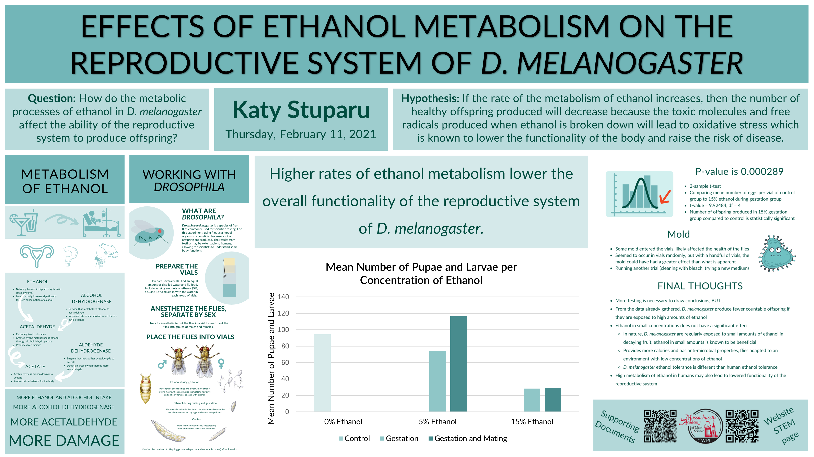

The Effects of Ethanol Metabolism on the Reproductive System of D. melanogaster
STEM I is a science fair project that each student at Mass Academy completes during A, B, and C term of junior year. Visit my supporting documents Google Drive folder or view the STW page to see my Project Proposal, Project Notes, Literature Review, and more. Scroll down to learn about my project!
Abstract
Alcohol metabolism is known to impair the functions of several body systems. The experiment discovered how metabolic processes of ethanol in D. melanogaster affect the ability of the reproductive system to produce offspring. It was hypothesized that if the rate of the metabolism of ethanol increases, then the number of healthy offspring produced will decrease because the toxic molecules and free radicals produced when ethanol is broken down will lead to oxidative stress which is known to lower the functionality of the body and raise the risk of disease. Flies were split into seven groups (including control), with each vial containing 5, 10, or 15 percent ethanol in the liquid mixed with the Drosophila medium. Female flies received ethanol at different stages: during gestation or during mating and gestation. It was found that the flies in vials with a higher concentration of ethanol were unable to lay as many eggs as the flies in vials with the natural amount of ethanol or no ethanol. It is suggested that the metabolism of ethanol in Drosophila melanogaster inhibits the typical functions of the reproductive system due to the increased level of ethanol metabolism. Although D. melanogaster and humans are structurally different, it is expected that consuming large amounts of ethanol can similarly reduce the functionality of the human reproductive system.
Research Question
How do the metabolic processes of ethanol in D. melanogaster affect the ability of the reproductive system to produce offspring?
Hypothesis
If the rate of the metabolism of ethanol increases, then the number of healthy offspring produced will decrease because the toxic molecules and free radicals produced when ethanol is broken down will lead to oxidative stress which is known to lower the functionality of the body and raise the risk of disease.
Introduction
It is a well-known fact that the consumption of alcohol can do great damage to the human body. Many studies have been done to show that those who have a higher intake of alcohol are more susceptible to malfunctions throughout the body. Some of these effects are cancer, epilepsy, and heart disease. These risks may have other attributing factors but have an association with drinking (Rehm, 2011). In the last two decades, scientists have begun to look at the deeper causes of these diseases and have studied the way that ethanol affects the body at the molecular level. They discovered how the body reacts to small and large amounts of ethanol and understood why it can put the body at a health risk. While they found positive correlations between alcohol intake and the risk of many specific diseases, many of the causes remained unknown. What scientists did find, however, is an understanding of how ethanol is broken down in the body and how it can cause disease in a more general case.
When alcohol is taken into the body, it is absorbed into the bloodstream, mainly through the stomach and the small intestine. The ethanol in the blood gets delivered to many places around the body. In these places, primarily the liver, alcohol dehydrogenase works to break down the ethanol into acetaldehyde. Acetaldehyde is an extremely toxic substance that can cause many diseases or malfunctions of the body. A chemical reaction with another enzyme, aldehyde dehydrogenase, eliminates the acetaldehyde and produces acetate. When a surplus of ethanol is in the body, the function of alcohol dehydrogenase increases to accommodate, producing acetaldehyde at a faster rate. However, the rate at which aldehyde dehydrogenase works stays the same, so the result is an excess amount of acetaldehyde which remains in the body for hours until it is broken down. When this occurs often, it becomes especially dangerous for the body as acetaldehyde is unsafe (NIAAA Publications, n.d.).
In addition to this, the reaction of acetaldehyde with tissues produces free radicals (Comporti et al., 2010). Free radicals, a byproduct of a metabolic process, are chemically unstable molecules, meaning that they are very reactive. The body balances these toxins out with antioxidants, but when there are too many free radicals, the ratio of the toxins to antioxidants becomes too high. In this way, the reactive oxygen species can damage parts of cells. This situation, called oxidative stress, occurs when an excess of alcohol is consumed. When the body breaks down the large amounts of ethanol, it reaches a point where the free radical to antioxidant ratio becomes too high, increasing the risk for diseases such as cancer, Alzheimer’s, Parkinson’s, and more (Zima et al., 2001).
Recently, scientists have worked to understand how the metabolism of ethanol affects different areas of the body or the chances of contracting a certain disease. One study found that the consumption of ethanol led to lowered fertility rates in male rats. This was because of the accumulation of acetaldehyde and 1-hydroxyethyl in testes where ethanol metabolism occurred damaged the organ’s ability to produce sperm (Quintans et al., 2005). Female fertility was also found to be lowered by ethanol when scientists found structural change and malfunctions to the ovaries of female rats (Faut et al., 2009). In another study, researchers discovered that the metabolism of ethanol in the uterine horn of female rats caused damage to the uterus for similar reasons (Buthet et al., 2011). The breaking down of ethanol even in small amounts can change the function of many organs in the body (not just the liver where it is primarily metabolized), particularly reproductive organs. However, it is not well known how the metabolism of ethanol affects the functionality of the reproductive system as a whole.
Studies have also used Drosophila melanogaster, which is a type of fruit fly commonly used as a model organism in scientific experiments. Although the structure of D. melanogaster and humans is different, the disease-related genes among both species are 75 percent alike (Ugur et al., 2016), so the effect of ethanol on the flies may be applicable to humans as well. However, it is important to note that D. melanogaster thrive with a small amount of ethanol in their diet, as found in nature. Similar studies done with the rats have also been done with D. melanogaster. For example, it was discovered that ethanol intake during the gestation period affects the lipid regulation of offspring, which can be used to model fetal alcohol syndrome in humans (Logan-Garbisch et al., 2014). With D. melanogaster as a model organism, the effects of ethanol on the functionality of reproductive system can be researched. Using the knowledge about how ethanol affects the body, it is hypothesized that female D. melanogaster will produce offspring in greater numbers if less alcohol is consumed. The following study looks at the potential interference that the consumption of ethanol has with the production of offspring.
Methodology

To test the effect of ethanol on the reproductive system, D. melanogaster were placed into several vials with the medium containing varying concentrations of ethanol. The flies were given ethanol during gestation or gestation and mating. The vials were set up and the flies were anesthetized and handled using standard procedures. After two weeks, the number of pupae and visible larvae were counted and the mean number of pupae and larvae per adult female fly in each experimental group was calculated. A two-sample t-test was performed.
First, fifteen cylindrical vials with a height of 4 in. and a diameter of 1.25 in. were prepared. D. melanogaster medium was placed at the bottom of the vial with an even amount of distilled water (mixed with ethanol) poured on top. Ethanol with 40 percent concentration was used. The liquid poured into each vial had a concentration of 0, 5, or 15 percent. Additionally, a small amount of baker’s yeast was sprinkled on top of the medium to aid growth.
A vial of D. melanogaster for experimental use provided the organisms. After transporting the flies to a separate vial and anesthetizing them for about a minute (until most had fell asleep), they were sorted into males and females. Five females were placed into each of the seven vials, while three males were placed only into the control vial (0 percent ethanol) and half of each type of the experimental vials (into one 5 percent vial and one 15 percent vial). The vials were all labeled with the concentration of ethanol in the liquid as well as the stage that females received ethanol: gestation for the vials with just females and gestation and mating for the vials with females and males.
After two weeks, the number of pupae and visible larvae produced in each vial were counted. The number of adult flies was recorded as well. The qualitative conditions in each vial were also made note of. A two-sample t-test was done comparing the mean number of pupae produced per adult female fly from the 5 percent group to the 15 percent group.
Figures
Table 1: Number of Eggs Produced per Vial
The results from the experiment, the number of eggs produced by 5 adult female D. melanogaster, are shown below for control groups and groups receiving 5 and 15 percent ethanol during gestation or gestation and mating.
Figure 1: Mean Number of Pupae and Larvae per Concentration of Ethanol
The values from Table 1 are shown, comparing the average amount of eggs that 5 adult female D. melanogaster produce per ethanol concentration.
Results
The groups with gestation and mating were not used in the significance test because the male sexual behavior during mating is known to be affected by ethanol (Shohat-Ophir et al., 2012). A 2-sample t-test comparing the control group to the 15 percent gestation group produced a t-value of 9.92484 and a P-value of 0.000289, less than 0.05. Therefore, it can be concluded that the difference between the number of eggs produced in the control group compared to the 15 percent ethanol during gestation group is statistically significant.
Discussion
The results supported the hypothesis that an increased rate of the metabolism of ethanol of D. melanogaster results in fewer offspring being produced. When the fruit flies ingested higher concentrations of ethanol, the number of pupae and countable larvae produced after two weeks was significantly lower than the number of offspring produced by flies consuming little to no ethanol. Flies consuming high amounts of ethanol were not able to successfully reproduce due to the free radicals that accumulated in their body. When great amounts of ethanol are broken down, acetaldehyde is formed and creates free radicals. These unstable molecules damage reproductive tissue and inhibit its typical function (NIAAA Publications, n.d.). It is possible that the free radicals affected the general health rather than the reproductive system itself; however, studies done with rats discovered the presence of ethanol metabolism in various reproductive organs (Quintans et al., 2005; Faut et al., 2009; Buthet et al., 2011). Overall, it is concluded that higher ethanol metabolism rates in D. melanogaster inhibit the ability to produce offspring.
The fruit flies that received a 5 percent concentration of ethanol in the liquid mixed with medium were able to reproduce just as well (if not better) than the control group. This finding is because evolutionarily, D. melanogaster have developed a small resistance to the toxicities of ethanol. In nature, D. melanogaster thrive in ethanol concentrations as high as 6 or 7 percent. These flies benefit from the extra calories and antimicrobial properties from rotting fruit, giving them an advantage over other species (Pohl et al., 2012). Thus, the flies which are adapted to small amounts of ethanol were able to reproduce well when consuming 5 percent ethanol concentration of liquid.
During the first trial of testing, mold formed inside many vials, which likely impacted the general health of the flies and thus reproduction. Therefore, the data from that round of testing cannot be used to support the results due to the possibility of confounding variables and uncontrollable conditions.
The result that more ethanol metabolism decreases the functionality of the reproductive system in D. melanogaster may also be applicable to humans. The two species may react similarly to the effects of free radicals, due to the 75 percent similarity in genes relating to disease (Ugur et al., 2016). Although fruit flies and humans likely have varying responses to certain concentrations of ethanol, the idea that great amounts of ethanol consumed relative to that species’ ethanol tolerance and resistance cause the reproductive system to malfunction likely holds true.
This experiment discovered that high rates of ethanol metabolism cause for D. melanogaster to be unable to produce as many offspring compared to no ethanol metabolism. The contribution of the study lies in its conclusion that ethanol consumption leads to an inhibited production of offspring. The general results are extendable to humans. The consumption of ethanol is widely known to have a negative effect on the body; more specifically, it is important to note that alcohol lowers the ability to create offspring.
February Fair Poster
References
Buthet, L. R., Bietto, F. M., Castro, J. A., & Castro, G. D. (2011). Metabolism of ethanol to acetaldehyde by rat uterine horn subcellular fractions. Human & Experimental Toxicology, 30(11), 1785–1794. https://doi.org/10.1177/0960327110396537
Comporti, M., Signorini, C., Leoncini, S., Gardi, C., Ciccoli, L., Giardini, A., Vecchio, D., & Arezzini, B. (2010). Ethanol-induced oxidative stress: Basic knowledge. Genes & Nutrition, 5(2), 101–109. https://doi.org/10.1007/s12263-009-0159-9
Faut, M., Rodríguez de Castro, C., Bietto, F. M., Castro, J. A., & Castro, G. D. (2009). Metabolism of ethanol to acetaldehyde and increased susceptibility to oxidative stress could play a role in the ovarian tissue cell injury promoted by alcohol drinking. Toxicology and Industrial Health, 25(8), 525–538. https://doi.org/10.1177/0748233709345937
Logan-Garbisch, T., Bortolazzo, A., Luu, P., Ford, A., Do, D., Khodabakhshi, P., & French, R. L. (2014). Developmental Ethanol Exposure Leads to Dysregulation of Lipid Metabolism and Oxidative Stress in Drosophila. G3: Genes|Genomes|Genetics, 5(1), 49–59. https://doi.org/10.1534/g3.114.015040
NIAAA Publications. (n.d.). Retrieved October 13, 2020, from https://pubs.niaaa.nih.gov/publications/aa72/aa72.htm
Pohl, J. B., Baldwin, B. A., Dinh, B. L., Rahman, P., Smerek, D., Prado, F. J., Sherazee, N., & Atkinson, N. S. (2012). Ethanol preference in Drosophila melanogaster is driven by its caloric value. Alcoholism, Clinical and Experimental Research, 36(11), 1903–1912. https://doi.org/10.1111/j.1530-0277.2012.01817.x
Quintans, L. N., Castro, G. D., & Castro, J. A. (2005). Oxidation of ethanol to acetaldehyde and free radicals by rat testicular microsomes. Archives of Toxicology, 79(1), 25–30. https://doi.org/10.1007/s00204-004-0609-5
Rehm, J. (2011). The Risks Associated with Alcohol Use and Alcoholism. Alcohol Research & Health, 34(2),135–143.
Shohat-Ophir, G., Kaun, K. R., Azanchi, R., Mohammed, H., & Heberlein, U. (2012). Sexual Deprivation Increases Ethanol Intake in Drosophila. Science, 335(6074), 1351–1355. https://doi.org/10.1126/science.1215932
Ugur, B., Chen, K., & Bellen, H. J. (2016). Drosophila tools and assays for the study of human diseases. Disease Models & Mechanisms, 9(3), 235–244. https://doi.org/10.1242/dmm.023762
Zima, T., Fialová, L., Mestek, O., Janebová, M., Crkovská, J., Malbohan, I., Stípek, S., Mikulíková, L., & Popov, P. (2001). Oxidative stress, metabolism of ethanol and alcohol-related diseases. Journal of Biomedical Science, 8(1), 59–70. https://doi.org/10.1007/BF02255972